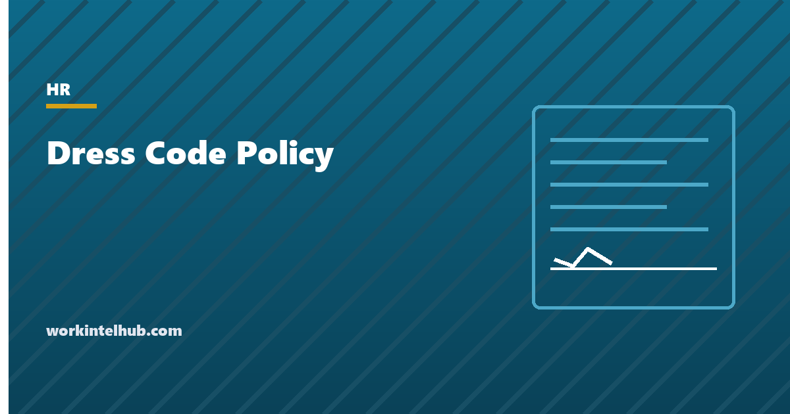

Dress Code Policy

A dress code policy tells employees what to wear at work. That was once the whole subject; it no longer is. The law now shapes the policy at four points. Religious dress must be accommodated unless the cost is substantial, a standard the Supreme Court raised in 2023. Hair texture and protective styles are protected from discrimination in most states. Standards that differ by sex are a discrimination risk. And rules broad enough to cover union insignia are an unfair labour practice. A policy written in 2015 usually fails at least one of those.
The generator below produces a policy that handles all four for a casual, business casual, professional or uniform workplace. The rest of the page explains each rule, the wording that survives, the safety exception, and how to enforce the policy without creating the complaint it was meant to prevent.
Dress code policy generator
Nothing typed here leaves your browser. The policy is written to be gender-neutral, to accommodate religious and medical needs, and to comply with hair-discrimination laws now in force in most states; have it reviewed before adopting it where state law adds requirements.
The four standards
| Standard | Typical wording | Fits |
|---|---|---|
| Casual | Clean, neat, no rips, no offensive text, safe for the work area | Tech, creative, warehouse offices, most remote-first companies |
| Business casual | Collared or tailored tops, dress trousers or neat dark jeans, closed shoes; no athletic wear | The default for most US offices since about 2020 |
| Business professional | Suits or tailored jackets, dress shirts and blouses, dress shoes | Law, finance, client-facing consulting, some sales |
| Uniform or safety-based | Provided items worn complete; PPE where required; hair and jewelry secured near equipment | Retail, hospitality, healthcare, food, manufacturing, construction |
Write the standard once, for everyone, as a list of what is and is not acceptable. The sentence that does the most work in the generator is "any employee may follow any of the options described", which removes the sex-specific columns that older policies used and that the EEOC and several state agencies treat as evidence of sex stereotyping. Uniform policies carry a payroll rule: deductions for required uniforms may not take pay below minimum wage under the FLSA, and California, New Jersey and several other states prohibit charging employees for required uniforms at all. The handbook guide covers where the policy sits and the remote work policy the video-call line.
Religious accommodation after Groff
Title VII requires employers to accommodate an employee's religious dress and grooming practices, head coverings, facial hair, religious garments and jewelry, unless doing so would impose an undue hardship. For nearly fifty years employers could refuse on a showing of more than trivial cost. Groff v. DeJoy (2023) ended that: the Supreme Court held unanimously that undue hardship means a burden that is substantial in the overall context of the employer's business, and that customer preference, co-worker discomfort and the inconvenience of an exception are not hardships at all.
The EEOC guidance on religious garb and grooming sets out the practical consequences. An employer may not assign an employee to a back-office role to keep religious dress away from customers. It may not require a religious head covering to match the uniform colour without offering an alternative. And it must engage with the request rather than apply a blanket rule. Safety is the surviving exception, and it must be real: a beard that prevents a respirator seal in a role that requires one is a hardship; a beard in an office is not. The generator's policy routes every request to HR because the most common failure is a supervisor saying no on the spot. The reasonable accommodation examples page covers the parallel process for disability.
Hair: the CROWN Act states
The CROWN Act (Creating a Respectful and Open World for Natural Hair) prohibits discrimination based on hair texture and protective hairstyles associated with race, such as braids, locs, twists, afros and bantu knots. California passed the first version in 2019. As of August 2026 around thirty states have enacted one, Pennsylvania most recently in November 2025, along with dozens of cities and counties. The EEOC treats hair-based discrimination as race discrimination under Title VII regardless of state law. A policy that bans "unkempt", "extreme" or "unprofessional" hair, or that lists prohibited styles, is the policy these laws were written against.
The compliant wording is short: hair should be clean and, where safety requires, restrained; no texture or style is prohibited; and the protective styles are named so that no manager has to guess. Safety restraints (a hairnet in food preparation, hair tied back near machinery) apply to every employee equally and are lawful.
Union insignia, tattoos and the NLRB
Employees have a protected right under the National Labor Relations Act to wear union buttons, insignia and clothing referring to wages and working conditions, in unionised and non-union workplaces alike. Under the NLRB's Stericycle decision standard adopted in August 2023, a work rule is presumptively unlawful if an employee could reasonably read it as restricting that right, and the employer must show a legitimate business interest that could not be served by a narrower rule. A dress code that bans "any slogans or messages" or requires "company-branded apparel only" is exactly the kind of rule the standard captures. The generator's policy includes an express carve-out; the safety and customer-facing exceptions have to be documented and applied to all messages, not only union ones.
Tattoos and piercings are not protected characteristics, but blanket bans are increasingly rare because they shrink the hiring pool and occasionally collide with religious markings. "Permitted; offensive content may be asked to be covered" is where most policies have settled.
Enforcing it
- Privately, and by the manager. A quiet word, not a group email after one person's outfit.
- Consistently. The policy enforced against one demographic and not another is a discrimination claim with the enforcement records as the evidence.
- Without commentary on bodies. "That is not within the policy" is the whole sentence. Comments on attractiveness, weight or figure convert a dress code conversation into a harassment complaint.
- With the accommodation question asked first. If the item might be religious or medical, the conversation starts with "is there something we should accommodate?" not with the rule.
- Through the discipline policy for repeats. Sending a non-exempt employee home to change unpaid is permitted; docking an exempt employee's salary for it is not.
The progressive discipline policy and the complaint form are the two documents that sit beside this one.
Key takeaways
- Write one gender-neutral standard as a list of acceptable and unacceptable items, and state that any employee may follow any option.
- Religious dress must be accommodated unless the burden is substantial (Groff v. DeJoy, 2023); customer preference and co-worker discomfort do not count, and requests go to HR, not a supervisor's on-the-spot no.
- Hair texture and protective styles are protected in around thirty states and under Title VII; name the styles and prohibit none.
- Rules broad enough to ban union insignia are presumptively unlawful under the NLRB's 2023 Stericycle standard; carve them out.
- Safety requirements override the rest and apply to everyone equally; required uniforms cannot take pay below minimum wage.
- Enforce privately, consistently, without comments on bodies, and with the accommodation question asked first.
Frequently asked questions
What should a dress code policy include?
The standard (casual, business casual, professional or uniform) as a list of acceptable and unacceptable items written without reference to gender; any stricter rule for customer-facing days and a line for video calls; safety requirements; a hair and grooming section that prohibits no texture or style; a religious and medical accommodation process routed to HR; a carve-out for union insignia; and how the policy is enforced.
Can an employer have different dress codes for men and women?
It is legally risky. Sex-specific standards are treated by the EEOC and many state agencies as sex stereotyping, and they conflict with gender-identity protections in most states. The safer policy writes one standard and states that any employee may follow any of the options in it.
Do employers have to accommodate religious dress?
Yes, unless doing so would impose a substantial burden on the business, the standard the Supreme Court set in Groff v. DeJoy in 2023. Customer preference, co-worker discomfort and the inconvenience of an exception are not hardships. Genuine safety conflicts, such as a beard preventing a respirator seal, can be.
Can a dress code ban dreadlocks or braids?
Not lawfully in the roughly thirty states with a CROWN Act, in the many cities with equivalent ordinances, or under the EEOC's reading of Title VII, which treats discrimination based on hair texture and protective styles as race discrimination. Neutral safety rules, such as hair restrained near machinery, remain lawful when applied to everyone.
Can an employer prohibit union buttons or slogans on clothing?
Generally no. Wearing union insignia is protected under the National Labor Relations Act in union and non-union workplaces, and under the NLRB's 2023 Stericycle standard a rule broad enough to cover it is presumptively unlawful unless a narrower rule could not serve a legitimate interest. Documented safety or customer-facing exceptions applied to all messages alike can be defended.
Can an employee be sent home for violating the dress code?
Yes. A non-exempt employee may be sent home to change without pay for the time away. An exempt employee's salary may not be docked for a partial day, so the time is either paid or the matter handled through discipline. Repeated violations go through the progressive discipline policy, applied consistently.